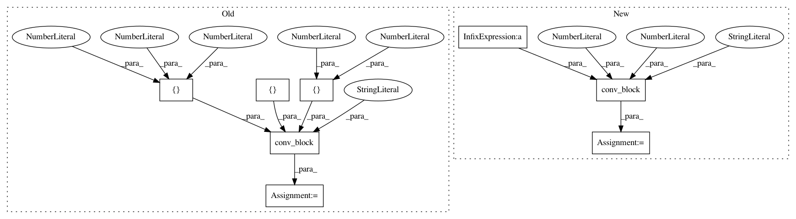

b16131429ff9ad2952b44d9ba514d6811e98c6cf,batchflow/models/tf/mobilenet.py,MobileNet_v2,block,#Any#Any#Any#Any#Any#Any#Any#Any#,200
Before Change
tf.Tensor
num_filters = int(cls.num_channels(inputs, kwargs.get("data_format")) * expansion_factor * width_factor)
conv_filters = [num_filters, num_filters, filters]
x = conv_block(inputs, "cna Cna cn", conv_filters, [1, 3, 1], name=name, strides=[1, strides, 1], **kwargs)
if residual:
x = inputs + x
return x
After Change
num_filters = int(cls.num_channels(inputs, kwargs.get("data_format")) * expansion_factor * width_factor)
x = conv_block(inputs, "cna", num_filters, kernel_size=1, name="%s-exp" % name, strides=1, **kwargs)
x = depthwise_conv(x, kernel_size=3, strides=strides, padding="same",
data_format=kwargs["data_format"], name="%s-depthwise" % name)
x = conv_block(x, "nacn", filters, kernel_size=1, strides=1, name="%s-down" % name, **kwargs)
if residual:
x = inputs + x
In pattern: SUPERPATTERN
Frequency: 3
Non-data size: 8
Instances
Project Name: analysiscenter/batchflow
Commit Name: b16131429ff9ad2952b44d9ba514d6811e98c6cf
Time: 2019-08-05
Author: d.mylzenova@analysiscenter.org
File Name: batchflow/models/tf/mobilenet.py
Class Name: MobileNet_v2
Method Name: block
Project Name: analysiscenter/batchflow
Commit Name: 1d7b7345ab3254ed9b450dbd4208a3d63cb4963f
Time: 2017-11-09
Author: a.kozhevin@analysiscenter.ru
File Name: dataset/models/tf/fcn.py
Class Name: FCN
Method Name: _build
Project Name: analysiscenter/batchflow
Commit Name: 1d7b7345ab3254ed9b450dbd4208a3d63cb4963f
Time: 2017-11-09
Author: a.kozhevin@analysiscenter.ru
File Name: dataset/models/tf/linknet.py
Class Name: LinkNet
Method Name: _build